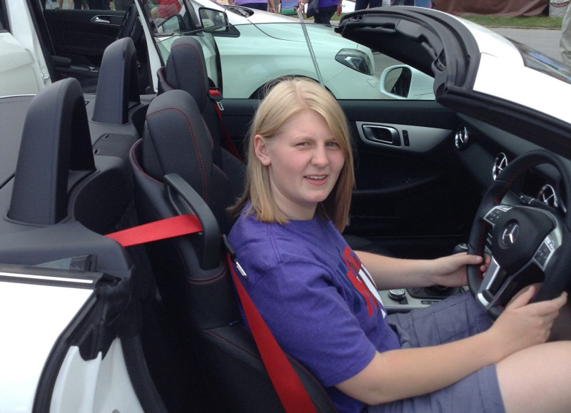

The Great Yorkshire Show 2014
Published: 15th July 2014
On Tuesday 8th July I went to the Great Yorkshire Show with a work colleague. Apart from the weather taking a turn for the worst it was a very good day out.
We got to the Great Yorkshire Show via the provided coaches at 10am. In my opinion this was the easiest way to get to the show and it meant that you didn’t have the hassle of sitting in queues and parking.
Getting into to the ground was very easy, we just queued for about 5 minutes in the correct line and showed our tickets to the women at the desk. Once we was inside there was many attractions and facilitates around.


The main attractions we saw at the Great Yorkshire Show were:
- The Animals (Goats, Pigs, Cows, Rabbits and Sheep)
- Sheep Shredding
- Hounds Show
- Stalls and Food Stalls
- Sports Cars
- The Eye
All of these main attractions that we saw offered us plenty of things to do throughout the day making it a brilliant day out. The eye cost an extra £4.50 but was well worth the money as you stayed on for quite a long time. This allowed for you to see and look around the whole ground (which is huge!) from a height.
There was plenty of food on offer; too many decisions on what to eat for me. While walking around we eat some of the samples that was on the stalls and sat down for lunch in the Yorkshire Café where I had meatballs and chips with a fizzy drink. This cost around £10 in total for the whole meal which is very expensive compared to the prices on the other food stalls around the ground. The meatballs and chips were very nice however the sauce it was covered in had a weird taste that I didn’t like but at least we had somewhere to sit and eat our lunch. After lunch I tucked into a lovely mint ice cream cone while we looked around the plants that were on show. Once we had walked around many more stalls we stop for a cup of tea and a chocolate muffin and sat in the sun on the grass. Overall, I feel that the food prices weren’t too expensive and did enjoy the meal that I had.
I feel that there was so many stalls and attractions to see that it was quite hard to find many of them. This was mainly because of how big the ground was. However, there were plenty of maps around if you did get lost which is always a help.
The weather for the day was very good as we had some sunshine which allowed us to enjoy walking around the different stalls and watch the attractions that were there. However, it did rain in the last hour that we was there for which was a shame. This didn’t spoil the day as we had my umbrella and we was still able to look around the stalls and watch the attractions even if we did get a bit wet!
Overall, I feel this was a brilliant day out that I would recommend to anyone. I would love to go again next year and feel that it is value for money as it is a superb day out for all the family.